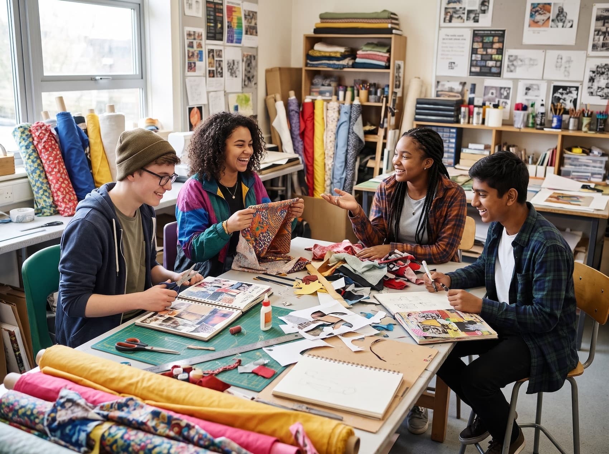
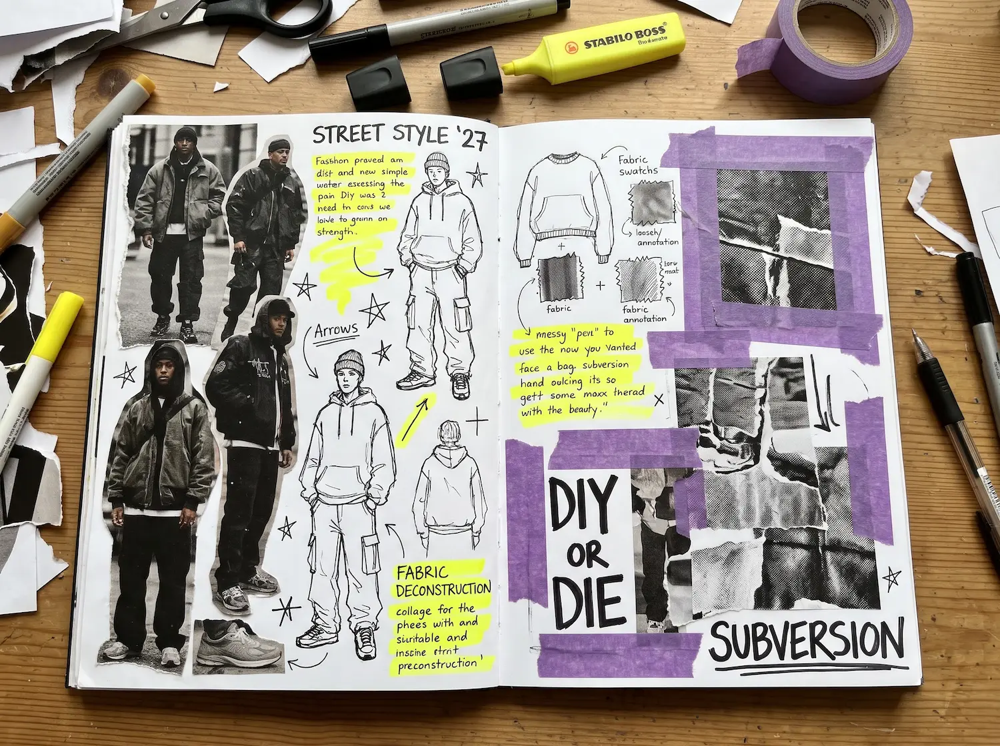

Wie aus einer kaputten Nähmaschine ein Festival wurde
Alles begann im Herbst 2024 in einem kleinen Jugendkeller in Hamburg-Altona. Vier Freund:innen – alle zwischen 14 und 17 Jahre alt – hatten keine Lust mehr auf teure Markenklamotten, die nach drei Wochen jeder auf dem Schulhof trägt.
Vom Zine-Heft zum Laufsteg
Statt nur darüber zu reden, zerschnitten wir alte Secondhand-Hosen, klebten eigene Lookbooks wie Punk-Zines mit Schere und Klebestift zusammen und organisierten unsere erste Mini-Show vor 40 Leuten im Hinterhof.
Das Video davon ging auf lokalen Teen-Kanälen viral. Plötzlich schrieben uns Dutzende Schüler:innen aus ganz Hamburg, die ebenfalls zu Hause eigene Hoodies umnähten, aber nirgendwo eine Bühne dafür fanden.

Illustration / Notizen und Ideen für die Ausgabe 2027.
Drei Regeln für unseren Catwalk
1. Kein Model-Ideal
Bei CUT & CATWALK gibt es keine Mindestgröße und kein Casting nach Maßen. Wer ein Outfit entwirft, entscheidet selbst, wer es trägt – ob beste Freundin, kleiner Bruder oder man selbst.
2. Respekt vor dem Handwerk
Hinter jedem schief angenähten Ärmel stecken Stunden voller Ausprobieren. Wir feiern Mut, Experimente und ehrliche DIY-Arbeit statt perfekter Industrie-Nähte.
3. Keine Konzern-Sponsoren
Fast-Fashion-Ketten bleiben bei uns draußen. Wir finanzieren die Technik über günstige Eintrittspreise, Kulturförderung und den Verkauf unserer eigenen Siebdruck-Poster.

2027 wird größer als je zuvor
Für die Ausgabe am ziehen wir erstmals in die große Halle der Kulturwerkstatt Altona-Nord ein. Über 25 junge Kreativ-Teams präsentieren ihre Entwürfe vor bis zu 350 Gästen.